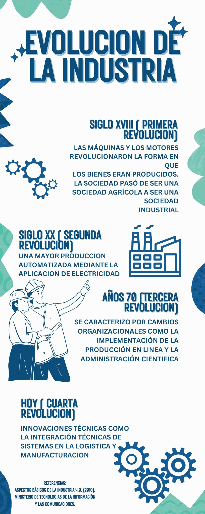

Evolucion de la Industria
- Primera Revolucion Industrial.
Comienza con la introducción de equipos mecánicos en la
manufactura al final del siglo XVIII. Las máquinas y los motores revolucionaron la forma en que
los bienes eran producidos. La sociedad pasó de ser una sociedad agrícola a ser una sociedad
industrial.
- Segunda Revolucion Industrial
Comenzó
a principios del siglo XX e involucró la producción en masa de bienes usando electricidad y
basada en la división del trabajo. Esta revolución se caracterizó por cambios organizacionales
como la implementación de la producción en línea (fordismo) y la administración científica de
procedimientos (taylorismo). La producción en masa aumentó y procedió en las industrias
química, electrónica y automotriz.
- Tercera Revolucion Industrial
- comenzó en los años 70 y continúa hasta hoy.
- se
caracteriza por la implementación de la electrónica y de las tecnologías de la información para
la automatización de los procesos de manufactura
- permite el gradual remplazo del
trabajo humano.
- Cuarta Revolucion Industria
La cuarta revolucion industrial. Desde la primera revolución industrial, los siguientes cambios radicales fueron las máquinas
digitales y los ambientes de manufactura automatizados, los cuales provocaron efectos
significativos sobre la productividad. Las principales razones y los disparadores de esos
cambios radicales son la individualización
